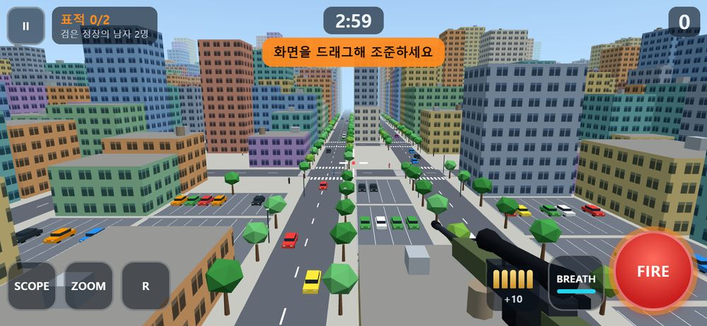
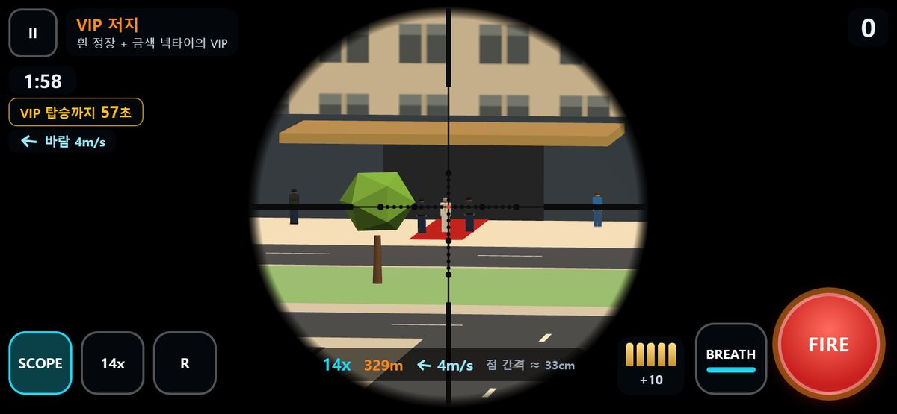
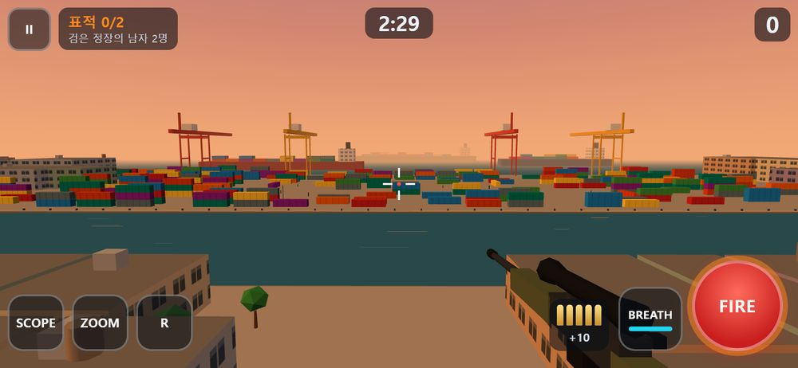
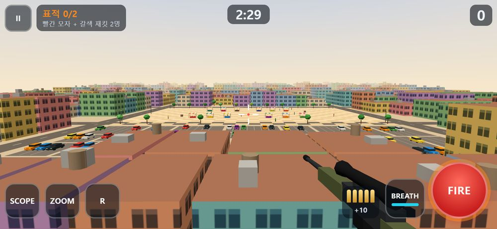
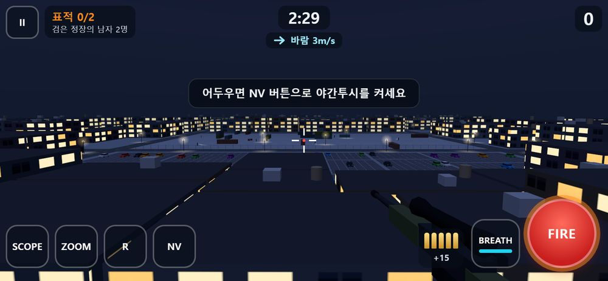
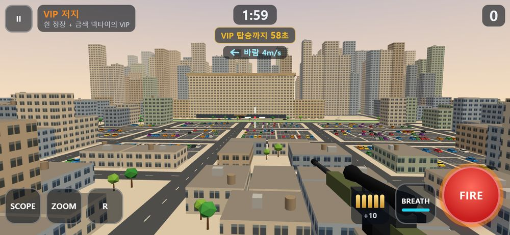
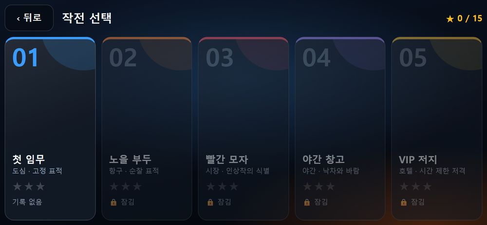
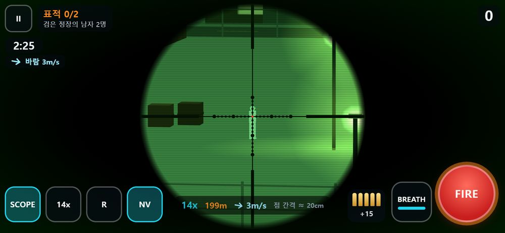
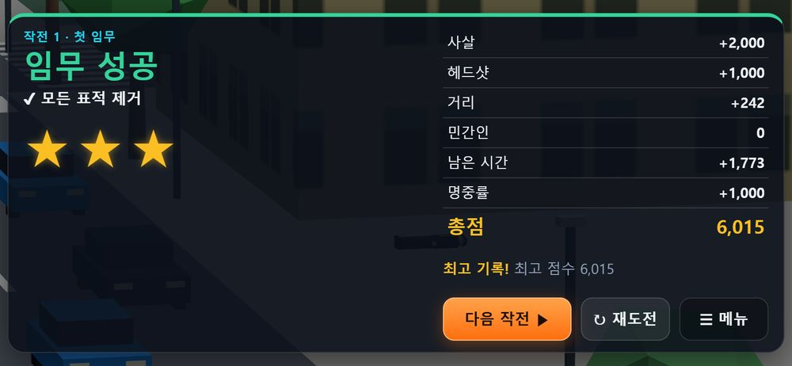

1첫 임무
낮 도심 · 정지한 표적 2명. 단계별 힌트가 조작을 알려 줍니다.
100–144 mClaude Code 에이전트 팀 · 2026-10-04
아이폰에서 가볍게 도는 컬러 3D 1인칭 저격 게임을 에이전트 6명이 나눠 만든 과정입니다. App Store 없이 웹앱(PWA)으로 설치하고, 폰에 올리기 전에 PC에서 먼저 테스트합니다.

결과물
옥상에 엎드린 저격수가 되어 스코프로 표적을 찾고, 숨을 참아 흔들림을 줄인 뒤 한 발로 임무를 끝내는 게임입니다. 탄은 초속 850m로 실제로 날아가서 움직이는 표적은 앞을 겨눠야 하고, 4·5스테이지는 중력 낙차와 바람이 더해집니다. 빗나간 탄이 근처에 떨어지면 표적이 눈치채고 출구로 달아납니다.
Three.js로 만든 로우폴리 3D이고 그림자·후처리를 쓰지 않아 가볍습니다. 배포물은 Three.js 750KB, 게임 코드 170KB, 아이콘을 합쳐 약 1.16MB입니다.

낮 도심 · 정지한 표적 2명. 단계별 힌트가 조작을 알려 줍니다.
100–144 m
컨테이너 사이를 순찰하는 표적. 숨는 구간을 피해 멈출 때를 노립니다.
173–237 m
인파 속 빨간 모자 2명. 민간인을 맞히면 즉시 실패합니다.
162–197 m
야간투시 사용. 바람 3m/s와 낙차를 처음 보정합니다.
199–246 m
경호받는 VIP가 약 59초 뒤 차에 탑니다. 25배율, 바람 4m/s.
318–332 m


조직
PM(메인 세션)이 사용자와 소통하고, 다섯 전문 에이전트가 각자 맡은 파일만 고칩니다. 같은 파일을 두 명이 동시에 만지지 않도록 폴더 단위로 담당을 나눴습니다. 설계 단계에서는 Plan 에이전트가 인터페이스와 성능 예산을 검토했습니다.
숫자는 각 파일의 줄 수입니다. 역할 정의는 .claude/agents/*.md에 저장돼 있어 다시 쓸 수 있습니다.
작업 방식
여러 에이전트가 동시에 코드를 쓰면 서로 맞물리지 않는 것이 가장 큰 위험입니다. 그래서 PM이 개발 전에 두 가지를 먼저 만들었습니다. 모듈 사이의 약속을 적은 인터페이스 계약서(design/CONTRACT.md)와, 그 약속대로 이미 끝까지 돌아가는 뼈대 게임입니다. 뼈대 상태에서도 조준 → 발사 → 122m 헤드샷 → 임무 성공까지 동작했습니다.
각 에이전트는 뼈대에서 자기 파일의 속만 바꿨습니다. 계약을 바꿔야 할 때는 직접 고치지 않고 PM에게 요청했고, PM이 판단해 계약서 버전을 올렸습니다.
13:10에 사용량 한도로 세 에이전트를 멈췄다가 15:42에 같은 맥락으로 재개했습니다. 그 사이 작업은 없었습니다. 시각은 design/workflow-log.md 기록입니다.
Three.js r185를 내려받아 넣고, 모든 모듈을 이미 동작하는 뼈대로 작성했습니다. PC 테스트 도구(play_pc.bat, tools/serve.py)와 자동 테스트 기반(tests/smoke.mjs)도 이때 만들었습니다.
기획서와 5스테이지 데이터를 작성했습니다. 별점 기준은 "전원 헤드샷·빠른 클리어"와 "몸통 사살·보통 속도" 두 가지 플레이를 가정해 점수를 계산해서 정했습니다.
graphics·gameplay·mobile이 각자 폴더를 맡고, qa-tester는 같은 시간에 테스트 코드를 썼습니다. gameplay-dev는 17분 만에 끝나 낙차 예측과 실제 값이 0.1346m로 일치함을 확인했습니다.
문법 검사, 5스테이지 스모크(에러 0), 메뉴와 스테이지별 맨눈·스코프 화면 13장을 직접 확인했습니다. 배포 용량은 1.16MB입니다.
16개 시나리오가 모두 통과했고 메모리 누수도 없었습니다. 사람 눈으로 본 화면에서 경미한 UI 문제 2건(결과 화면에 남는 안내 문구, 스코프 위쪽을 덮는 안내)이 나와 mobile-ios-dev가 4분 만에 고쳤고, 해당 시나리오를 다시 돌려 통과를 확인했습니다.
사용자가 play_pc.bat으로 직접 플레이하고 의견을 줍니다. 의견이 있으면 담당 에이전트가 고치고 다시 확인합니다. 여기서 OK가 나와야 배포합니다.
저장소를 만들고 push(사용자 확인 후)한 뒤, 아이폰 Safari에서 홈 화면에 추가합니다.
| 버전 | 요청한 에이전트 | 바뀐 내용 | 이유 |
|---|---|---|---|
| v1.0 | PM | 최초 계약: 좌표 규약, 모듈 API, 이벤트 18종, 성능 예산 | 병렬 개발의 기준 |
| v1.1 | game-designer | 이동 경로 의미, 소품 치수표, 건물 배치 금지 구역 확장(경로·차량·도주로) | 걸어가는 인물이 건물을 뚫고 지나가지 않게 |
| v1.2 | gameplay-dev | VIP 남은 시간, 명중 수, 숨 참기 상태의 정확한 의미 | HUD가 같은 뜻으로 표시하게 |
| v1.3 | qa-tester | 잠긴 카드 표기, PC 첫 클릭 규칙, 테스트 모드의 잠금 표시 | 자동 테스트가 모호함 없이 판정하게 |
검증
qa-tester가 설치된 Chrome을 아이폰 가로 화면(844×390, 터치)으로 흉내 내 실제 탭과 드래그로 테스트했습니다. 결과는 tests/QA_REPORT.md에 있습니다.
| 시나리오 | 확인한 것 | 결과 |
|---|---|---|
| 부팅 · 세로 화면 | 에러 0, 세로로 들면 "가로로 돌려주세요"와 자동 일시정지 | 통과 |
| 실제 터치 흐름 | 탭으로 타이틀 → 작전 선택(2~5 잠김) → 브리핑 → 플레이 | 통과 |
| 조작 | 드래그 방향, 스코프·줌, 볼트 동안 연사 차단, 5발 후 재장전 | 통과 |
| 탄도 | 헤드샷 판정, 이동 표적 리드 사격, 중력 낙차(예측 0.135m) | 통과 |
| 규칙 | 민간인 오사 실패, 근처 착탄 시 경계·도주, VIP 탈출 실패와 저지 성공 | 통과 |
| 야간투시 · 수명주기 | NV 켜도 드로우콜 그대로, 백그라운드 전환 시 일시정지, WebGL 손실 복구 | 통과 |
| PWA | 서비스워커 설치 후 오프라인 재실행, manifest·아이콘·메타 태그 | 통과 |
| PC 조작 | 마우스 잠금 조준, 클릭 발사, 휠 줌, Shift/R/N/Esc | 통과 |
| 메모리 | 스테이지 1→5 순환 3회, 5스테이지 재로드 10회 후에도 GPU 자원 수 고정 | 누수 없음 |
| 화면 육안 확인 | 결과 화면에 안내 문구 잔상, 스코프 위쪽 안내 겹침 | 수정 후 통과 |
| 스테이지 | 드로우콜 | 삼각형 | p95 프레임 | CPU 4배 느리게 · p95 | CPU 4배 · 최대 |
|---|---|---|---|---|---|
| 1 도심 | 14 | 29,444 | 7.1 ms | 7.1 ms | 20.7 ms |
| 2 항구 | 17 | 45,026 | 7.1 ms | 7.1 ms | 27.9 ms |
| 3 시장 | 19 | 35,624 | 7.1 ms | 7.1 ms | 14.0 ms |
| 4 야간 | 22 | 26,316 | 7.1 ms | 13.8 ms | 21.0 ms |
| 5 VIP | 18 | 47,558 | 7.1 ms | 14.0 ms | 48.5 ms |
예산은 드로우콜 100, 삼각형 12만입니다. 이 PC는 화면 주사율 144Hz에 프레임이 묶여 있어서, 부하 차이는 CPU를 4배 느리게 했을 때의 프레임 시간으로 봅니다. 그 기준으로 4·5스테이지가 가장 무거워 아이폰에서 먼저 확인할 대상입니다. 아이폰에서는 프레임이 밀리면 해상도를 자동으로 낮춥니다.
배포 전 단계
C:\MyWork\Claude_PJT\Sniper_Game\play_pc.bat을 더블클릭합니다.아이폰 화면 배치 보기: 게임에서 F12 → Ctrl+Shift+M → iPhone 기종 선택 → 가로 회전.
PC 확인이 끝난 뒤
한 번 온라인으로 실행하면 그다음부터는 비행기 모드에서도 열립니다. 자이로 조준은 설정에서 켜고 권한을 허용합니다.
다음 작업
역할 정의 5개가 .claude/agents/에 있어서, 이 폴더에서 Claude Code를 열면 팀을 그대로 부를 수 있습니다. 각 정의에는 먼저 읽을 문서, 담당 파일, 성능 예산, 끝내기 전 자가 점검이 들어 있습니다.
cd C:\MyWork\Claude_PJT\Sniper_Game claude > graphics-dev 에이전트로 2스테이지 하늘을 더 붉게 바꿔줘 > game-designer와 gameplay-dev로 6번째 스테이지(눈 내리는 산장)를 추가해줘 > qa-tester로 전체 테스트 돌리고 결과 알려줘
| 문서 | 내용 |
|---|---|
| design/CONTRACT.md | 모듈 인터페이스 계약 v1.3 — 개발 전 반드시 읽는 기준 |
| design/GDD.md | 기획서: 메커닉 수치, 점수·별점 계산, 스테이지 설계 |
| design/INSTALL.md | PC 테스트, GitHub Pages 배포, 아이폰 설치, 문제 해결 |
| design/workflow-log.md | 이 보고서의 시간 기록 원본 |
| tests/QA_REPORT.md | 자동 테스트 결과와 성능·메모리 표 |